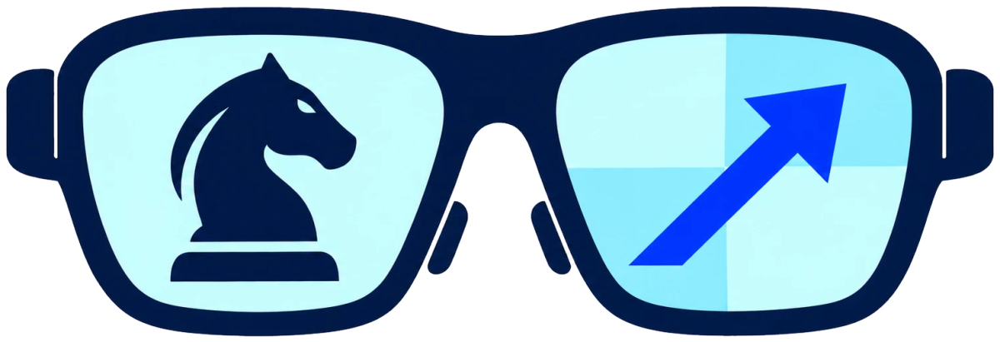

Your real chessboard, read live.
KnightSide watches a physical chess game through a camera, follows every move, and quietly says the best move when it's your turn.
How it works
No markers, no setup photos, no account.
Point a camera at the board
Put your laptop or webcam on your side of the board, looking across it, so all 64 squares are in view.
Start from the opening position
Press New game and hold still for about three seconds. KnightSide learns your board and lighting, and works out which side you play.
Play
Every move is followed live. On your turn, the best move is shown and spoken, for example “Knight to f3”.
What you need
- A green-and-white board, like the standard roll-up tournament boards. Wooden boards aren't supported yet.
- A standard chess set with light and dark pieces.
- A computer with a webcam, and a recent Chrome, Edge, Safari or Firefox.
- Good, even light. Avoid strong shadows across the board.
Everything runs in your browser: the board reading and the Stockfish chess engine. Your camera video never leaves your device, and nothing is stored.
The first visit downloads about 20 MB (the vision library and the engine). After that it loads from your browser's cache.
Hands-free with Ray-Ban Meta glasses
With the KnightSide iPhone app, the glasses' camera sees the board from your own eyes, and the best move is spoken quietly in the glasses. Nobody else hears it.
The app runs the same engine as this website, entirely on the phone. No computer needed.
The glasses app isn't on the App Store yet. Websites can't use the glasses' camera; only phone apps can, through Meta's toolkit. Until the app is published, the webcam version on this site is the way to try KnightSide.
Play fair
KnightSide is made for casual games, learning and fun with friends who know you're using it. Don't use it in rated games, tournaments or online play, where engine help is cheating.